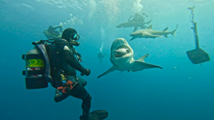

About
Blog posts are published every Saturday and can be found here on this page. Please stay in touch with our blog by subscribing below! Shark stories will be published here and can also be sent in through our contact page! Shark Stories was established for recreational ocean explorers to share encounters they may have had with sharks of all species! It is to excite enthusiasts and bring together a community of people to share their love and thrill of the creatures below. To be featured in our weekly blog, visit our Contact page.
